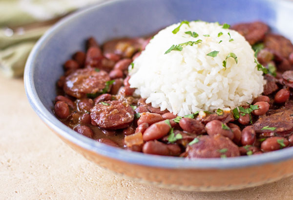

Savory Beans and Rice

Description
Kielbasa with beans and rice is a savory and hearty dish, and it's healthy too with added celery and sweet peppers.
Ingredients
- Kielbasa
- Rice
- Pinto beans
- Stewed tomatoes
- Celery
- Bell peppers
- Garlic
- Italian seasoning
- Salt
Steps
- Cut up sausage and add to pot
- Cut up vegetables and add to pot
- Add beans to pot
- Add tomato sauce to pot
- Cook rice separately
- Wait until almost done and add pre-diced garlic, italian seasoning, and salt
- Wait until it cools and serve.